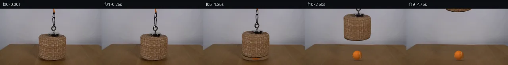
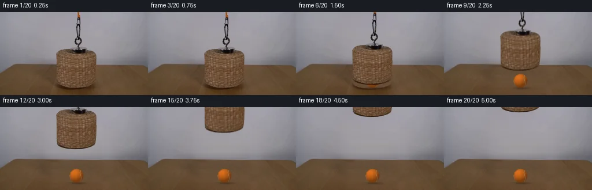
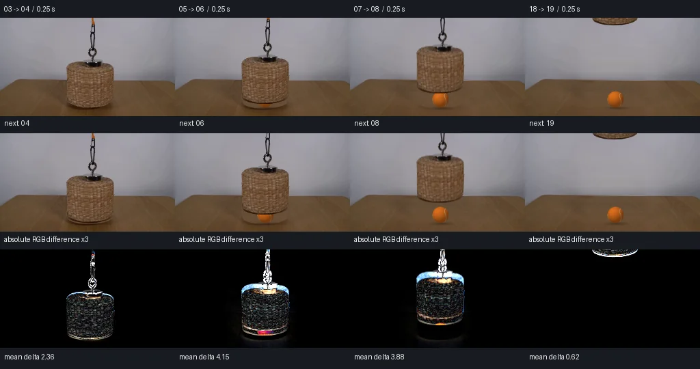

V0 · 初版 · 最终提交
![]()
Observable Generation Trace
把最终像素视频、Harness 冻结的每轮候选、真实工具事件和 Agent 自述放在同一页。可观测证据与模型自述分开标记，避免把“模型说它检查过”误当成真实工具调用。
![首帧]()
Static locked-off single-shot with fixed frame throughout filmed with constant framerate in real-time. The scene shows a realistic scientific demonstration. The scene only contains the described setup and actions. The orange tennis ball is on the table. The woven basket is attached to a strong magnet that is connected to an orange cord. The woven basket hanging on an orange cord covers the ball and is then lifted to the top of the frame.
首帧显示在左侧播放器初始画面。Track 权限、隔离和 tensor 一致性来自 run manifest，而不是 METHOD.md。
默认勾选初版和最终版；可选其他版本一起同步播放。仅检查图更新的连续重复快照已合并，回退旧视频仍保留为一次修订。
Observable events
来源：events.jsonl + run manifest
此 Track 禁止读取输出图片。逐轮预览由外部 Harness 自动冻结，只用于事后审计，生成 Agent 当时看不到这些页面。
Frozen candidates
每张图来自该 round 的真实 00 / 01 / 05 / 10 / 19 帧

pixels 9b6f89c7bf80d338 · code 4db0f40dfe1cc65e
--- previous/generate.py
+++ current/generate.py
@@ -0,0 +1,283 @@
+"""PixelWorld continuation using source-pixel layers and analytic local drawing.
+
+No network, learned models, image-view tools, or external rendering engines.
+Run from this workspace: python generate.py
+"""
+from pathlib import Path
+import json
+import hashlib
+import numpy as np
+from PIL import Image, ImageDraw
+from scipy.ndimage import gaussian_filter, map_coordinates
+from scipy.spatial import cKDTree
+import artifact_io
+
+ROOT = Path(__file__).resolve().parent
+H, W = 144, 256
+SOURCE = np.array(Image.open(ROOT / 'first_frame.png').convert('RGB'))
+Y, X = np.mgrid[:H, :W]
+LIFT = np.array([0, 0, 0, 0, 2, 7, 14, 22.5, 31.5, 41,
+ 50.5, 60, 69.5, 79, 88.5, 98, 107.5, 116, 122, 124.])
+
+
+def smoothstep(a, b, v):
+ t = np.clip((v-a)/(b-a), 0, 1)
+ return t*t*(3-2*t)
+
+
+def clean_plate():
+ """Fit smooth source illumination and copy source wood-texture residuals."""
+ src = SOURCE.astype(float)
+ low = gaussian_filter(src, sigma=(1.1, 3.0, 0))
+ estimate = src.copy()
+ for y in range(H):
+ if y < 60:
+ # Narrow interpolation across the cord and metal assembly.
+ xa, xb = 121, 151
+ u = (np.arange(xa, xb+1)-xa)/(xb-xa)
+ left = np.mean(src[y, 117:123], axis=0)
+ right = np.mean(src[y, 149:155], axis=0)
+ estimate[y, xa:xb+1] = left*(1-u[:, None])+right*u[:, None]
+ elif y < 91:
+ # Background with its original vertical illumination gradient.
+ fit_x = np.r_[np.arange(30, 68), np.arange(180, 225)]
+ for c in range(3):
+ coeff = np.polyfit(fit_x, low[y, fit_x, c], 2)
+ estimate[y, 64:180, c] = np.polyval(coeff, np.arange(64, 180))
+ # Very low amplitude source background texture, rather than noise.
+ xx = np.arange(64, 180)
+ donor = np.where(xx < 132, xx-40, xx+43)
+ estimate[y, xx] += .25*(src[y, donor]-low[y, donor])
+ elif y == 91:
+ # Sharp rear table edge at y~91, following its slight perspective slope.
+ xx = np.arange(64, 180)
+ edge = 90.1 + .0075*xx
+ coverage = smoothstep(-.45, .45, y-edge)
+ wall = np.array([140., 138., 143.])
+ wood = np.array([97., 75., 54.])
+ estimate[y, xx] = wall*(1-coverage[:, None])+wood*coverage[:, None]
+ else:
+ fit_x = np.r_[np.arange(24, 77), np.arange(182, 242)]
+ xx = np.arange(68, 181)
+ for c in range(3):
+ coeff = np.polyfit(fit_x, low[y, fit_x, c], 2)
+ estimate[y, xx, c] = np.polyval(coeff, xx)
+ # Same-row neighboring wood grain is copied into the covered surface.
+ left_x = np.clip(xx-76, 22, 77)
+ right_x = np.clip(xx+77, 182, 243)
+ mix = smoothstep(106, 148, xx)[:, None]
+ grain = (src[y, left_x]-low[y, left_x])*(1-mix)
+ grain += (src[y, right_x]-low[y, right_x])*mix
+ estimate[y, xx] += grain
+ # Masks include the original basket's contact shadow, avoiding a dark ghost.
+ region = np.zeros((H, W), float)
+ region[:60] = smoothstep(122, 126, X[:60])*(1-smoothstep(146, 150, X[:60]))
+ region[60:91] = smoothstep(65, 95, X[60:91])*(1-smoothstep(169, 179, X[60:91]))
+ region[91:] = smoothstep(69, 96, X[91:])*(1-smoothstep(168, 180, X[91:]))
+ # Keep first row's unobstructed background exactly fixed as well.
+ plate = src*(1-region[:, :, None])+estimate*region[:, :, None]
+ return np.clip(plate, 0, 255), region
+
+
+def object_matte(plate):
+ """Supersampled wicker contour, with source-valued metal and cord matte."""
+ ss = 8
+ canvas = Image.new('L', (W*ss, H*ss), 0)
+ d = ImageDraw.Draw(canvas)
+ contour = [(120, 62), (127, 60.5), (138, 60.5), (148.5, 63),
… diff truncated; 196 more lines …pixels 9b6f89c7bf80d338 · code 5122e775ab8cc22c
--- previous/generate.py
+++ current/generate.py
@@ -6,6 +6,8 @@
from pathlib import Path
import json
import hashlib
+import re
+import base64
import numpy as np
from PIL import Image, ImageDraw
from scipy.ndimage import gaussian_filter, map_coordinates
@@ -232,12 +234,29 @@
packed = np.load(ROOT/'pixels.npz')['pixels']
assert packed.dtype == np.uint32 and packed.shape == (144, 256, 20)
assert np.array_equal(frames[0], SOURCE), 'First frame must equal source'
+ assert (ROOT/'frames'/'00.png').read_bytes() == (ROOT/'first_frame.png').read_bytes()
for t in range(20):
im = Image.open(ROOT/'frames'/f'{t:02d}.png')
assert im.mode == 'RGB' and im.size == (256, 144)
a = np.array(im).astype(np.uint32)
p = (a[:, :, 0] << 16) | (a[:, :, 1] << 8) | a[:, :, 2]
assert np.array_equal(p, packed[:, :, t]), f'Tensor mismatch {t}'
+ # Verify the standalone player's run-length patches without a browser or
+ # any image viewer. Its decoded RGB integers must reproduce the tensor.
+ html = (ROOT/'index.html').read_text()
+ data = json.loads(re.search(r'const DATA=(.*?);\nfunction unpack', html).group(1))
+ html_frame = np.frombuffer(base64.b64decode(data['first']), dtype='<u4').copy()
+ assert np.array_equal(html_frame.reshape(H, W), packed[:, :, 0])
+ for t, encoded in enumerate(data['deltas'], 1):
+ patch = np.frombuffer(base64.b64decode(encoded), dtype='<u4')
+ k = 0
+ while k < len(patch):
+ start, count = map(int, patch[k:k+2])
+ k += 2
+ html_frame[start:start+count] = patch[k:k+count]
+ k += count
+ assert np.array_equal(html_frame.reshape(H, W), packed[:, :, t])
+ assert len(data['deltas']) == 19 and '},250)' in html
# Ball and its contact patch are identical after the basket clears them.
assert all(np.array_equal(frames[8, 104:136, 116:151], f[104:136, 116:151])
for f in frames[8:])
@@ -257,6 +276,8 @@
'duration_seconds': 5, 'tensor_shape': list(packed.shape),
'tensor_dtype': str(packed.dtype), 'tensor_encoding': '0xRRGGBB',
'frame_zero_exact': True, 'all_pngs_match_tensor': True,
+ 'frame_zero_png_byte_identity': True,
+ 'html_all_frames_match_tensor': True, 'html_interval_ms': 250,
'stationary_ball_after_frame_08': True, 'fixed_side_regions': True,
'orange_ball_pixel_counts': counts.tolist(),
'mean_absolute_rgb_deltas': deltas.mean((1, 2, 3)).round(4).tolist(),Final visual checks
Harness 保存的最终产物


Agent claims
以下文字由生成 Agent 撰写，不等同于工具证据
The source is a 256 × 144 RGB PNG. Inspection used local Python/Pillow/NumPy reads and printed RGB samples, color predicate counts, and coordinate summaries. No image Read/View tool was used.
The locked camera looks toward a gray backdrop and a brown wooden tabletop. The table's distant edge crosses approximately y=91–95; its left edge enters the frame diagonally between x=0 and x=16 at y=110–95. The background has a broad brightness gradient: center-top RGB about (158,155,164), lower left about (119,119,129), and lower right about (100,100,108). The table is approximately RGB (98,74,50), with fine wood texture.
A woven brown basket occupies approximately x=97–166, y=63–135. Its upper shoulder widens from x=116 near y=64 to x=99 near y=73. Its side walls extend to about y=123 and its darker rounded lower rim lies around y=128–135. The weaving contains alternating brown strips and small bright strand highlights, so the original pixels will be retained as the moving object. A dark metal magnet/attachment assembly extends approximately x=128–141, y=10–64, with darker attachment pixels spreading across the basket's upper center. A short orange cord is visible at x=134–138, y=0–9; 22 strongly orange pixels were measured there. No separate orange ball is visible in the source. The basket already covers its position.
The continuation will hold the covered setup briefly, then lift the basket and attached hardware vertically to the top of the frame. A stationary orange tennis ball will be revealed below the rising rim. It will have center (132,119), radius about 12 pixels, and contact at y=131, with curved pale seams, diffuse spherical shading, and a small soft table shadow. Its initial location is an inferred hidden state, not an observed ball measurement. No person, camera motion, or extra apparatus is added.
The original object will be extracted with an antialiased contour and translated upward at subpixel positions. The backdrop and tabletop hidden by the original basket will be reconstructed from neighboring source pixels on the same surface. The tiny orange cord and hardware rise with the basket, keeping their attachment positions fixed. The initial basket's contact shadow will diminish as the object rises. The ball remains on the tabletop because the magnet lifts the attached basket.
All frames have fixed dimensions and are displayed for 0.25 seconds at 4 fps. Times below denote frame start times. Displacements are in image pixels; negative is upward.
| Frame | Time (s) | Basket vertical displacement | Event |
|---|---|---|---|
| 00 | 0.00 | 0.0 | Exact source image; ball covered |
| 01 | 0.25 | 0.0 | Covered setup holds |
| 02 | 0.50 | 0.0 | Covered setup holds |
| 03 | 0.75 | 0.0 | Lift begins from rest |
| 04 | 1.00 | -2.0 | Basket leaves tabletop |
| 05 | 1.25 | -7.0 | Lower part of ball begins appearing |
| 06 | 1.50 | -14.0 | More of ball is revealed |
| 07 | 1.75 | -22.5 | Basket clears ball |
| 08 | 2.00 | -31.5 | Ball fully visible and stationary |
| 09 | 2.25 | -41.0 | Steady upward lift |
| 10 | 2.50 | -50.5 | Steady upward lift |
| 11 | 2.75 | -60.0 | Basket approaches upper half |
| 12 | 3.00 | -69.5 | Basket enters top of frame |
| 13 | 3.25 | -79.0 | Upper basket moves out of view |
| 14 | 3.50 | -88.5 | Continued vertical lift |
| 15 | 3.75 | -98.0 | Lower basket remains visible above ball |
| 16 | 4.00 | -107.5 | Basket approaches final upper position |
| 17 | 4.25 | -116.0 | Lift slows |
| 18 | 4.50 | -122.0 | Basket approaches rest at top; bottom rim around y=10.5 |
| 19 | 4.75 | -124.0 | Lift comes to rest at top; lower rim around y=8.5; ball unchanged |
Required outputs will include the generator, packed uint32 RGB tensor, all 20 PNG frames, two contact/transition sheets, standalone playback HTML, and a method/verification report. Validation will check exact frame-zero identity, tensor/PNG agreement, output sizes and types, and movement/stationary regions numerically. The sheets will be generated as artifacts without claiming visual review.
The result is a 20-frame, 256 × 144 RGB continuation at 4 fps, with a five-second playback duration. The basket starts in the source position covering the ball, rises vertically with its magnet/attachment assembly and orange cord, and reaches the upper boundary. The orange tennis ball is revealed on the tabletop and remains stationary. No camera motion or additional apparatus was introduced.
generate.py uses local Python with Pillow, NumPy, and SciPy. This is a source-pixel compositing and analytic drawing method, not a learned video generation system or an external physics/rendering engine. The only scene inputs are first_frame.png and prompt.txt. The supplied artifact_io.py writes the packed tensor, PNGs, contact sheet, and standalone HTML player.
Source measurements and the event schedule were written in OBSERVATION.md before the generator was implemented. All inspection was performed through local RGB arrays, printed coordinates and statistics, and numeric comparisons. No image Read/View tool was used. inspection.png and transition_check.png were generated as review artifacts; they were not visually reviewed.
The basket retains its original woven texture, including the dark upper attachment and lower rim. Its silhouette uses an 8× supersampled polygon. RGB darkness relative to the nearby gray backdrop refines the upper outline and preserves holes in the metal hardware. Edge pixels are decontaminated against the reconstructed background, then stored as a premultiplied color layer. Bilinear vertical translation at the planned displacements gives antialiased movement without changing the basket's size or horizontal position. The basket's lowest contour starts at approximately y=132.5 and finishes at y=8.5, leaving a narrow portion visible along the upper boundary.
The hidden backdrop is reconstructed with row-wise interpolation and quadratic fits to source illumination outside the object. The covered tabletop is filled using neighboring same-row wood-texture residuals over a smooth fit to the table's lighting. The edits are feathered into the original surroundings. The original basket-shadow residual fades with lift height, and a soft analytic floor shadow fades during separation. The unobstructed side regions are copied exactly from the original image throughout the sequence.
The first frame has no visible separate orange ball, so the ball's hidden size and location are inferred: center (132,119), radius 12 pixels, contact near y=131. The ball uses a supersampled analytic sphere with diffuse normal-based shading, a small highlight, fixed low-amplitude felt texture, and a pale closed seam defined on a sphere and projected toward the camera. Its soft contact shadow is fixed on the table. Foreground basket compositing makes the ball appear progressively as the rim rises. This is an authored occlusion demonstration; the method does not estimate an unseen ball from source pixels or solve a magnetism simulation.
Frames 00–03 retain the exact source. The lift begins at frame 04, the ball becomes fully visible by frame 08, and the basket rises to the top by frame 19. Each frame is displayed for 0.25 seconds; sample start times span 0.00–4.75 seconds.
The generator's validation passed:
first_frame.png.pixels.npz contains key pixels, shape (144,256,20), dtype uint32, with each integer encoded as 0xRRGGBB.index.html match the tensor exactly, and the playback interval is 250 ms.verification.json records the checks, source RGB hash, displacements, orange pixel counts, and transition statistics. transition_check.png shows four before/after pairs and amplified RGB differences. .tmp/layers.npz contains the numeric matte, reconstructed plate, and displacement diagnostics. No browser playback or human-style visual review is claimed.
Reproduce the outputs from this workspace with python generate.py.